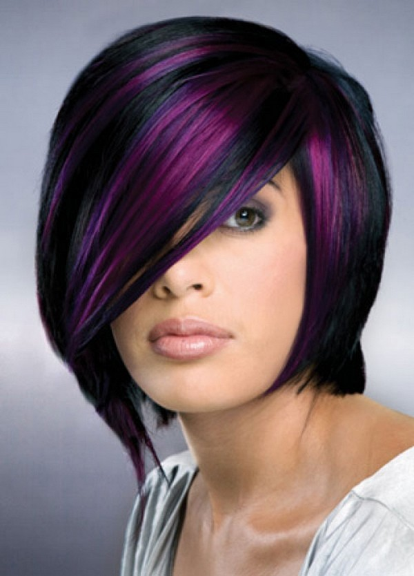

|
Cute Hair Colors Hairstyles

Are you looking for cute hair colors? Changing the color of your hair is an excellent way of enhancing your look.
In order to warm up your face, try adding gold highlights. If you are in a wild mood then some green streaks can do the trick.
Some women like their hair color so much that they want it to be permanent. Others are having fun while changing their hair colors.
For instance, Rihanna often changes her hair color depending on her present mood. She wore blonde, fiery red, raven and more.
Here you'll discover the latest hair color trends that will get you inspired and feel excited in changing your looks! |